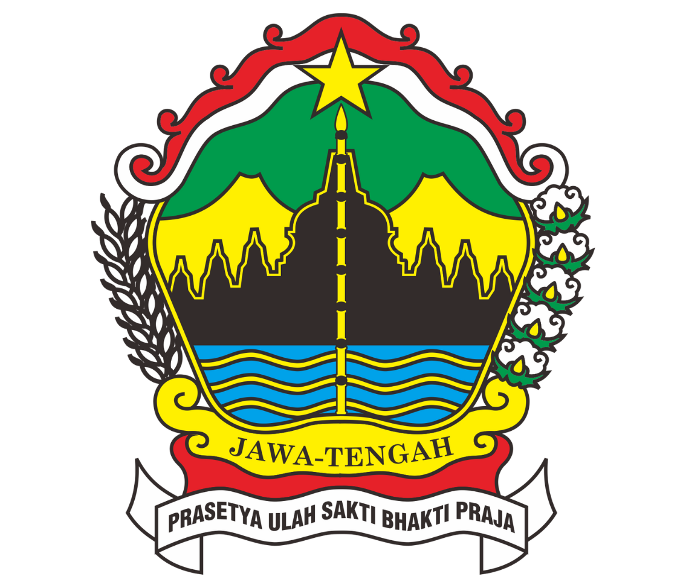

Sistem Informasi Geografis Persebaran Kejahatan Provinsi
Jawa Tengah
menampilkan informasi geografis mengenai perbandingan persebaran berbagai macam tindak kejahatan yang terjadi di Provinsi Jawa Tengah selama setahun terakhir pada tahun 2021.
Jawa
Tengah
merupakan sebuah wilayah provinsi di Indonesia yang terletak di bagian tengah Pulau Jawa. Ibu kota dari Provinsi Jawa Tengah adalah Kota Semarang.

BPS
Jawa Tengah
Data yang diperoleh untuk analasis yang dibuat berasal dari situs Badan Pusat Statistik Jawa Tengah.